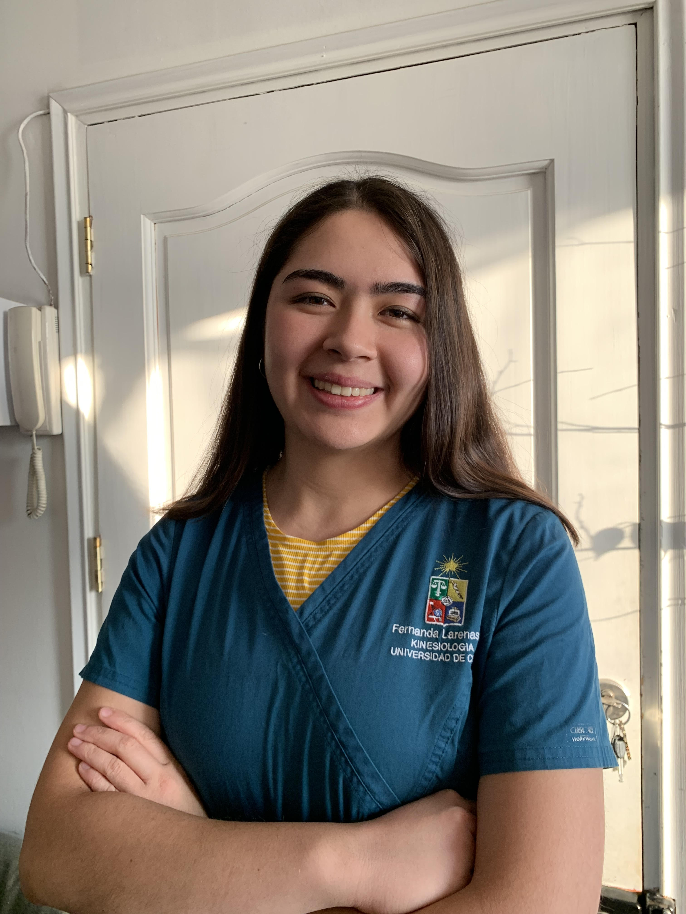

Curriculum Vitae
Fernanda Larenas Pérez

Kinesióloga de la Facultad de Medicina de la Universidad de Chile. Habilidades de trabajo en equipo,
compromiso y responsabilidad. Intereses por el área de neurorrehabilitación en pacientes pediátricos y
adultos, asi como en el área de cuidados respiratorios en etapa aguda y crónica de pacientes pediátricos y
dultos.
Datos Personales
- Teléfono: +56966124400
- Correo: fernanda.larenas@ug.uchile
- Dirección: bremen 1465 Ñuñoa
Experiencia
(Noviembre 2021-Abril 2023) Data entry en Proyecto LatamFingers Chile.
Ingreso de datos de evaluaciones médicas de los participantes del estudio, el cual está enfocado en estudiar la
prevención del deterioro cognitivo a través de cambios en el estilo de vida de personas mayores.
(Marzo 2020- Enero 2021) Integrante en Programa de Apadrinamiento en Ayudantes Docentes Universidad de
Chile
(Marzo 2020- Enero 2021) Integrante en Programa de Salud Deportiva del Programa Ayudantes Docentes
Universidad de Chile.
Links de interés